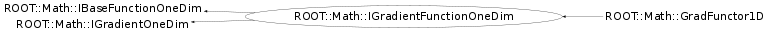

class ROOT::Math::IGradientFunctionOneDim: public ROOT::Math::IBaseFunctionOneDim, public ROOT::Math::IGradientOneDim
Documentation for the abstract class IBaseFunctionMultiDim.
Interface (abstract class) for generic functions objects of multi-dimension
Provides a method to evaluate the function given a vector of coordinate values,
by implementing operator() (const double *).
In addition it defines the interface for copying functions via the pure virtual method Clone()
and the interface for getting the function dimension via the NDim() method.
Derived classes must implement the pure private virtual method DoEval(const double *) for the
function evaluation in addition to NDim() and Clone().
@ingroup GenFunc
This class is also known as (typedefs to this class)
ROOT::Math::IParametricGradFunctionOneDim::BaseGradFunc, ROOT::Math::IGradFunction, ROOT::Math::GradFunctor1D::ImplFunction Members (Methods)
This is an abstract class, constructors will not be documented.
Look at the header to check for available constructors.
public:
| virtual | ~IGradientFunctionOneDim() |
| virtual ROOT::Math::IBaseFunctionOneDim* | ROOT::Math::IBaseFunctionOneDim::Clone() const |
| double | ROOT::Math::IGradientOneDim::Derivative(double x) const |
| double | ROOT::Math::IGradientOneDim::Derivative(const double* x) const |
| virtual void | FdF(double x, double& f, double& df) const |
| void | ROOT::Math::IGradientOneDim::Gradient(const double* x, double* g) const |
| double | ROOT::Math::IBaseFunctionOneDim::operator()(double x) const |
| double | ROOT::Math::IBaseFunctionOneDim::operator()(const double* x) const |
| ROOT::Math::IGradientFunctionOneDim& | operator=(const ROOT::Math::IGradientFunctionOneDim&) |
Class Charts
{kind=link}
{kind=link}
{kind=link}
{kind=link}

Function documentation
void FdF(double x, double& f, double& df) const
Optimized method to evaluate at the same time the function value and derivative at a point x.
Often both value and derivatives are needed and it is often more efficient to compute them at the same time.
Derived class should implement this method if performances play an important role and if it is faster to
evaluate value and derivative at the same time